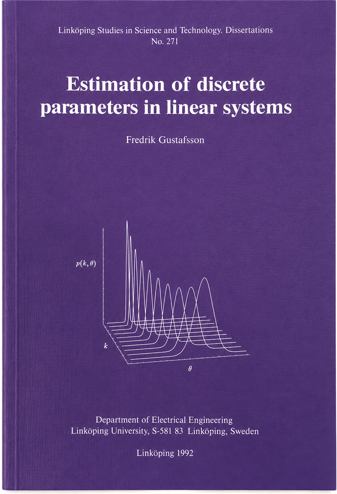

Academic
Signalprofessor has many publications, many citations and a reassuringly large h-index. Google Scholar keeps count.
I'm more interested in the research ideas that survived long enough to become useful.
Four of them have followed me for much of my career: detecting change, extracting information from moving vehicles, representing uncertainty, and figuring out where things are.
Things that change
My PhD thesis in 1992 was about change detection: how to notice quickly that the system producing your measurements isn't the system you thought it was.

The technical thread connects system identification, filtering, statistical inference, and discrete decisions: estimate what can be estimated, then decide whether the system producing the measurements has changed.
The thesis eventually became Adaptive Filtering and Change Detection (Wiley, 2000)—essentially my PhD thesis 2.0.
Change detection has kept coming back in different disguises. Twenty years later, work with Henrik Ohlsson, Lennart Ljung and Stephen Boyd revisited the problem through sparse estimation. That paper received the 2012 Automatica Best Paper Award.
More recently it turned up again in monitoring failures in implanted HeartMate pumps.
Apparently some research problems are difficult to get rid of.
Selected work → Thesis · Book · Automatica Best Paper · HeartMate monitoring
Cars, tyres and roads
My first serious application area was cars.
Can a car infer what is happening between tyre and road from sensors it already has?
Tyre–road friction is difficult to measure directly. It changes with the road, weather, tyres and vehicle dynamics, and becomes most important precisely when safety margins are small.
The work became an early exercise in virtual sensing: use models and signals already available in the vehicle to estimate a quantity that would otherwise require another physical sensor.
That question led to MSc projects, patents and research on tyre–road friction estimation, including an Automatica paper in 1997.
A few years later, some of the equations escaped.
→ NIRA Dynamics, 2001
A cloud of particles
In the late 1990s, Arnaud Doucet and Christophe Andrieu visited Linköping and introduced us to a beautifully simple idea.
Instead of forcing a complicated probability distribution into a convenient Gaussian shape, represent it by a cloud of samples.
Particle filters were exactly the kind of method we liked: elegant theory, computationally demanding, and immediately useful for difficult nonlinear problems.
Niclas Bergman was working on terrain-aided navigation for Gripen and promptly gave particle filters something unusually convincing to do.
Research that flies. For real.
In 2002 we tried to summarize what we had learned in Particle Filters for Positioning, Navigation, and Tracking.
Particle filters then spread through the research group into positioning, tracking, navigation and sensor fusion across generations of PhD students.
Twenty-four years later, IEEE decided the paper had survived rather well: it received the IEEE Signal Processing Society Sustained Impact Paper Award.
Selected work → 2002 paper · Particle-filter theory and practice
Where am I?
Around the same time, Fredrik Gunnarsson and I started asking a more general question:
What can radio signals actually tell us about position—and how accurately can we possibly know?
Our 2005 paper put heterogeneous radio measurements, geometry, maps, motion models and other sensors into one statistical estimation framework.
A central part was not only estimating position, but understanding fundamental accuracy limits: how measurement quality and geometry constrain the performance any method can achieve.
The measurements changed. Mobile networks went from GSM through 3G, 4G and 5G. Now 6G is beginning. Smartphones added inertial sensors and richer maps, but the same framework—measurements, geometry, motion, uncertainty and fusion—remains relevant.
The underlying questions changed remarkably little.
And some of those equations eventually escaped indoors.
→ Senion, 2010
And then there are the side quests
The four threads above explain much of my research career. Fortunately, not all of it.
And then there was a pandemic.
Suddenly estimating hidden states from noisy measurements was everybody's problem.
Together with researchers in control, statistics, epidemiology and healthcare, we worked on intervention effects, infection rates, hospitalisation forecasts and uncertainty.
One result ended up in Nature.
The journal, not the place where you find rhinos.
Sometimes people ask us to locate things.
A ferry in the Baltic Sea without using GPS.
A missing aircraft in the Indian Ocean.
Different sensors. Different stakes. Same irritating question:
Where are you?